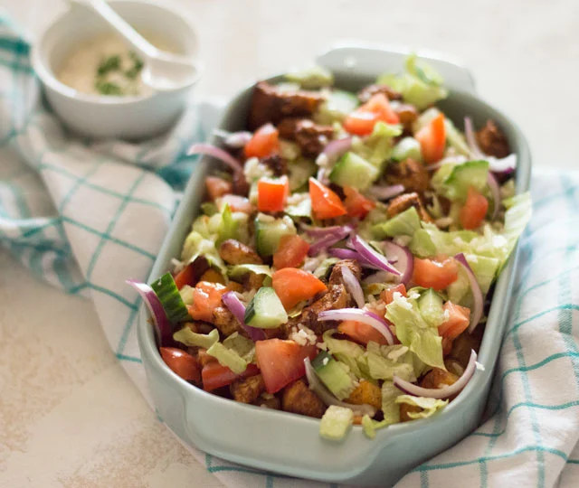
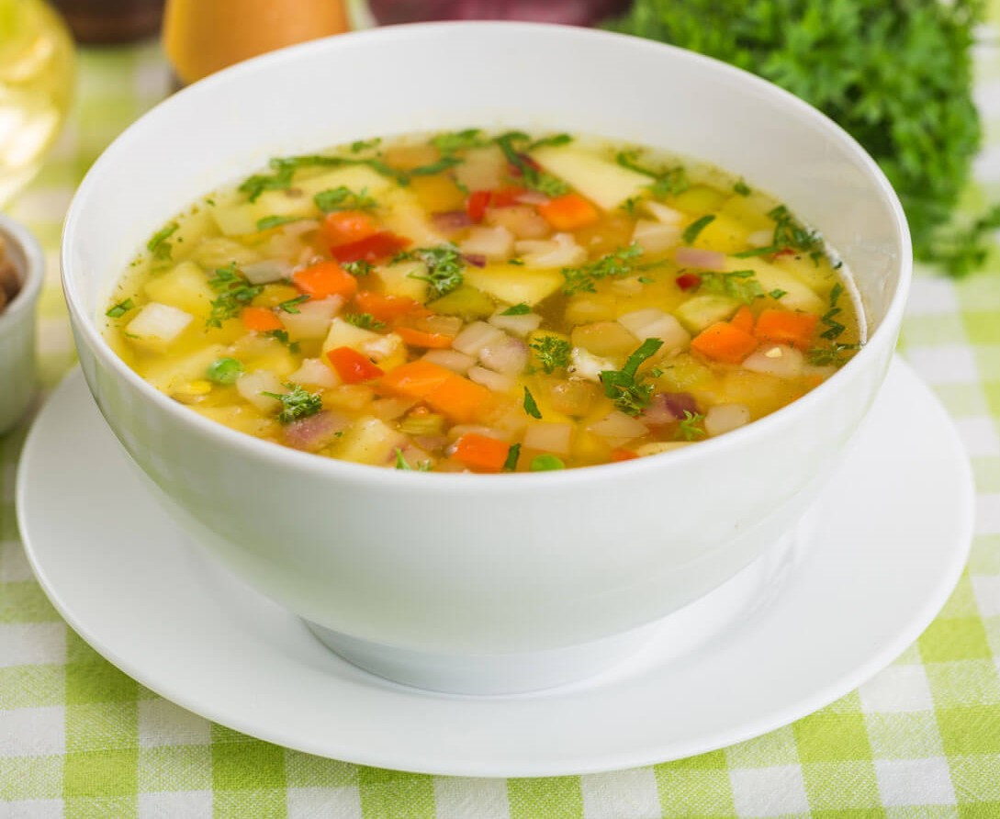

Mama's Receptenboek
Mijn moeder maakt altijd hele lekkere dingen.
Hier zijn een paar recepten.
Kipsalon
Opa's Groentesoep
Kipsalon

Ingrediënten
- 500 Gram Kip
- Patat/friet
- Shoarmakruiden
- Ijsbergsla
- 1 grote tomaat per persoon
- 1 rode ui
Stappenplan
- Doe de patat in de air-freyer voor 25 minuten op 180 graden.
- Doe daarna de kip in de pan en bak tot goudbruin
- En voeg de shoarmakruiden toe
- snij de sla uien en tomaten in stukjes
- Verdeel de patat en kip en garneer met de sla
Opa's Groentesoep

Ingrediënten
- 600 gram soepgroenten
- Mergpijp
- 2 groenteboullionblokjes
- soepgehaktballetjes
- 3 liter water
- vermicelli naar keuze
- Perper en zout(optioneel)
Stappenplan
- Breng het water aan de kook en laat de mergpijpen voor 1,5 uur lang zachtjes meekoken
- Haal de mergpijpen eruit
- Voeg de 2 groenteboullionblokjes toe
- Voeg de soepgroenten en gehaktballetjes toe
- Als de balletjes gaan zijn voeg dan de vermicelli toe
- Breng op smaak met peper en zout (optioneel)